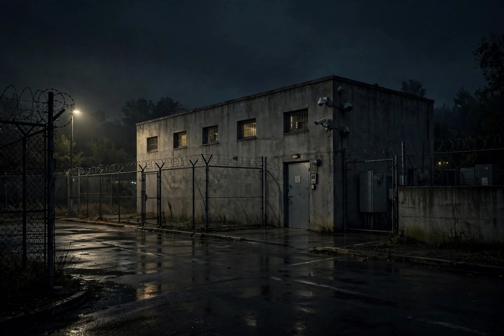

| Black site | |
|---|---|
 A covert detention facility | |
| Type | Clandestine detention and interrogation facility |
| Operated by | Central Intelligence Agency (U.S.) |
| Active | 2001–c. 2009 (acknowledged program) |
A black site is a clandestine detention center where prisoners who have not been charged with a crime are held, generally outside the legal jurisdiction in which the detaining authority normally operates. In the early 2000s, the United States Central Intelligence Agency (CIA) operated a network of such facilities in foreign countries as part of the "war on terror", holding suspected members of al-Qaeda and other groups for detention and interrogation using so-called "enhanced interrogation techniques".
The existence of the sites was reported by The Washington Post in November 2005 and by human rights organizations; in September 2006 President George W. Bush publicly acknowledged the program and announced the transfer of 14 "high-value detainees" to military custody at Guantanamo Bay. Reported locations included facilities in Thailand, Afghanistan (such as the "Salt Pit"), Poland, Romania, and Lithuania. President Barack Obama ordered the CIA detention facilities closed in January 2009.
A 2014 report by the United States Senate Select Committee on Intelligence concluded that the interrogation techniques were far more brutal than the CIA had represented and that the program produced no unique, otherwise unobtainable intelligence justifying them. The Council of Europe's 2006 Marty report and rulings of the European Court of Human Rights found that host states had enabled secret detention and ill-treatment, in some cases awarding damages to former detainees.
Critics argued that black sites violated the Geneva Conventions, the UN Convention Against Torture, and domestic law, because detainees were held incommunicado without charge, access to counsel, or recourse to courts. Supporters maintained the facilities were lawful wartime detention and essential to preventing further attacks after September 11, 2001.
Categories: Central Intelligence Agency · Human rights abuses · Secret detention